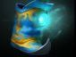

Dota 2 Builds
Warlock
Будучи главой отдела реликвий запретных архивов Ультимирской академии, Дэмнок Лэнник посвятил себя поиску затерянных, редких и просто запретных томов. Ничто не могло заставить Дэмнока свернуть с его тропы, стоило ему прознать, что, быть может, в конце пути он найдет хотя бы жалкий кусочек свитка с древними знаниями — ни проклятые храмы, ни запутанные пещерные ходы, ничто. И так часто приходилось ему сталкиваться с агрессивными сущностями, оставленными защищать эти самые древние знания, что изучение магии, томы о которой он и искал, стало жизненной необходимостью. С таким же бесконечным энтузиазмом принялся Лэнник за учение, с каким отправлялся в опаснейшие походы за записями — и в результате превзошел всех чернокнижников Ультимирской академии за время, которого остальным хватало, только чтобы пройти самые первые курсы — и то не всегда. Практически по инерции он вырезал себе посох из дредвудского дерева и заточил в него дух демона из Глубин Ада. И начал, в ожидании нахождения самой последней затерянной книги с древними знаниями, писать свое собственное произведение — Черный Гримуар. Вне всякого сомнения, это будет одним из лучших обучающих пособий по прикладной демонологии в мире.
Способности/Abulities
Fatal Bonds
Соединяет несколько врагов магической связью, в результате чего часть урона, полученного любым из них, наносится и остальным.

Способность: направленная на юнита
Действует на: врагов
Тип урона: тип источника урона/без отражения
Дальность отскоков: 700
Число отскоков: 6
Длительность: 25
Дальность применения: 1000
Распространяемый урон: 12%/16%/20%/24% (Талант: 16%/20%/24%/28%)
Древнее заклятие, которое объединяет жизненные силы различных существ в единую сущность.Shadow Word
 Герой шепчет заклинание, постепенно излечивая союзника или нанося урон врагу.
Герой шепчет заклинание, постепенно излечивая союзника или нанося урон врагу.
Способность: направленная на юнита/направленная на область (с Aghanim's Shard)
Действует на: врагов/союзников
Тип урона: магический
Дальность применения: 600/700/800/900
Лечение/урон в секунду: 15/25/35/45 (Талант: 40/50/60/70)
Длительность: 10
Тайные искусства Демнока могут найти множество применений — будь то мощные исцеляющие чары либо губительное проклятье.Upheaval
 Прерываемая — мощный замедляющий поток энергии, со временем становящийся сильнее. Действует до 10, 12, 14, 16 сек. Эффект сохраняется в течение 3 сек. после того, как враг покинул зону действия или способность прервалась.
Прерываемая — мощный замедляющий поток энергии, со временем становящийся сильнее. Действует до 10, 12, 14, 16 сек. Эффект сохраняется в течение 3 сек. после того, как враг покинул зону действия или способность прервалась.
Способность: направленная на область/прерываемая
Действует на: врагов/союзников (с талантом)
Тип урона: магический
Дальность применения: 900
Радиус:500/550/600/650
Макс. длительность: 10/12/14/16
Замедление скорости передвижения за секунду: 10/15/20/25%
Максимальное замедление:55/70/85/100%
Увеличение урона в секунду:10
Максимальный урон в секунду:35/60/85/110
Доп. скорость атаки союзников в секунду:0 (Талант: 12)
Максимальная доп. скорость атаки союзников: 0 (Талант: 70)
Длительность замедления и бонуса:0 (талант: 3)
Демнок управляет пространством и временем, ослабляя целые армии.Chaotic Offering
 Вызывает из недр земли голема, оглушающего врагов на 1 секунду. Голем живёт 60 сек., получает меньше урона от заклинаний, обжигает всех врагов вокруг и имеет уникальный эффект атаки.
Вызывает из недр земли голема, оглушающего врагов на 1 секунду. Голем живёт 60 сек., получает меньше урона от заклинаний, обжигает всех врагов вокруг и имеет уникальный эффект атаки.
Способность: направленная на область
Действует на: врагов
Дальность применения: 1000
Радиус оглушения: 600
Задержка: 0,5
Количество големов: 1
Длительность оглушения: 1
Время жизни голема: 60
Количество големов при смерти героя: 0 (Талант: 1)
Демнок выпускает из своего дредвудского посоха плененного духа, который разрушает вражеские рядыСборка/Builds
Начальный закуп:


Основные предметы:



YOUTUBE:GREYSHARK

YOUTUBE:GREYSHARK
ИСПОЛЬЗОВАТЬ ЭТОТ ИМБА БИЛД